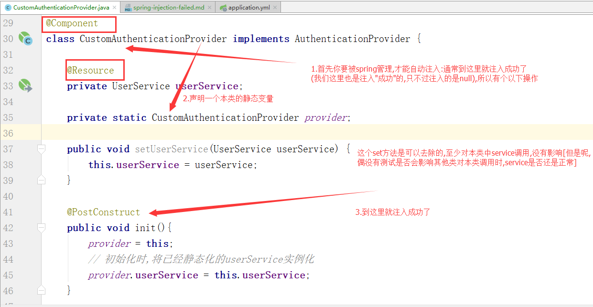

not the injection failed,but NPE
为什么这么说呢,因为我的错误信息是空指针异常,而不是注入失败的错误信息

1
2
3
4
5
6
7
8
9
10
11
12
13
14
15
16
17
18
19
20
21
22
23
24
25
26
27
28
29
30
31
32
33
34
35
36
37
38
39
40
41
42
43
44
45
| /**
* Created with IntelliJ IDEA.
*
* @author: mystic
* @date: 2017/10/19 8:54
* @since: JDK1.8.0_144
* @version: X
* Description: 自定义身份认证验证组件
*/
@Component
class CustomAuthenticationProvider implements AuthenticationProvider {
@Resource
private UserService userService;
private static CustomAuthenticationProvider provider;
public void setUserService(UserService userService) {
this.userService = userService;
}
@PostConstruct
public void init(){
provider = this;
// 初始化时,将已经静态化的userService实例化
provider.userService = this.userService;
}
@Override
public Authentication authenticate(Authentication authentication) throws AuthenticationException {
// 获取认证的用户名 & 密码
String name = authentication.getName();
String password = authentication.getCredentials().toString();
Map<String,Object> condition = new HashMap<>(16);
condition.put("userName",name);
condition.put("userPWD",password);
System.out.println("userService = " + userService);
System.out.println("provider.userService = " + provider.userService);
// 调用看这里,看这里,一定要看这里喔!!!
List<Map<String,Object>> userList = provider.userService.findUser(condition);
}
}
|
yeah
至于产生这种现象的原因,我也没搞太清,猜测是加载顺序的问题,有懂的小伙伴,
可以评论留言告诉我(评论留言功能还没做呢o(╯□╰)o)